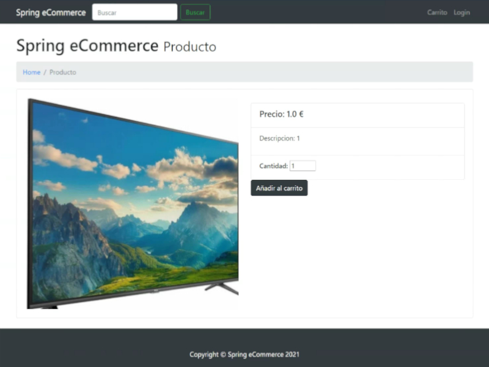

PORTFOLIO




Hola, soy Bruno Vazquez. Apasionado de la programación, me defino por ser una persona con ganas de aprender y con una actitud perseverante y resolutiva. Buena comunicación, trabajo en equipo y capacidad de resolución de problemas.
Durante el período 2020 - 2022, fui estudiante en el IES JAUME II EL JUST, donde cursé el programa de Técnico Superior de Desarrollo de Aplicaciones Multiplataforma. Esta etapa fue crucial para mi desarrollo como desarrollador, fortaleciendo mis habilidades en lenguajes como Java, Python, Flutter, Kotlin y C# con Unity, además de explorar diversas tecnologías para aplicaciones multiplataforma.
A través de proyectos colaborativos, diseñé, implementé y probé soluciones tecnológicas para diversas necesidades y desafíos. Además de las habilidades técnicas, cultivé competencias en trabajo en equipo, comunicación y resolución de problemas, enriquecido por la interacción con compañeros y profesores.
Estas bases sólidas adquiridas en el IES JAUME II EL JUST son fundamentales en mi carrera. Espero aplicar y expandir estos conocimientos en futuras oportunidades, contribuyendo al emocionante campo del desarrollo de aplicaciones multiplataforma.
Durante mi etapa como Técnico en Sistemas Microinformáticos y Redes en el IES JAUME II EL JUST, tuve la oportunidad de adentrarme en diversos aspectos tecnológicos y desarrollar habilidades fundamentales.
Mi formación abarcó áreas como el diseño y desarrollo web, donde trabajé con HTML y CSS para crear interfaces atractivas y funcionales. Además, adquirí experiencia en la administración de servidores Apache y en la configuración de servidores DNS y DHCP para garantizar una conectividad eficiente y segura en redes. También implementé y administré servicios utilizando la interfaz web de Webmin, lo que me permitió gestionar de manera eficiente varios aspectos de los servidores.
Además, adquirí experiencia en la instalación y configuración de sistemas operativos Windows y Linux, así como en la instalación y configuración de redes cableadas e inalámbricas. También aprendí a configurar y administrar dispositivos de red como routers y switches, lo que me permitió comprender mejor el funcionamiento de las redes.
Exploré el mundo de la edición multimedia, utilizando programas de edición de video, audio y foto para crear y modificar contenido multimedia. Sin embargo, tengo un conocimiento profundo del conjunto de herramientas de Microsoft Office, lo que me permite administrar las tareas de oficina de manera eficiente y profesional.
Mi etapa como Técnico en Sistemas Computacionales y Redes me ha brindado una base sólida en tecnologías esenciales y habilidades prácticas, lo que ha enriquecido mi perfil como profesional en el mundo de la tecnología.
Durante mis prácticas como desarrollador multiplataforma en Neverlate, desempeñé un papel clave en la mejora de la eficiencia y la innovación tecnológica dentro de la empresa. Una de mis contribuciones más notables es la creación e implementación de soluciones automatizadas que agilizan varias tareas operativas.
Uno de los proyectos en los que trabajé fue el desarrollo de bots personalizados para extraer automáticamente las identificaciones de los productos, lo que hace que la administración de la tienda en línea sea más eficiente y precisa. Estos bots han demostrado ser herramientas valiosas para aumentar la productividad y minimizar los errores en la gestión de productos.
Además, lideré el diseño y desarrollo de un sistema automatizado de organización de archivos CSV. La herramienta ha permitido a la empresa organizar y administrar de manera eficiente grandes cantidades de datos, lo que ayuda a optimizar los flujos de trabajo diarios y reduce significativamente el tiempo dedicado a las tareas administrativas.
Uno de mis mayores logros en este puesto fue implementar el sistema de inicio de sesión de la API de Google Analytics mediante PHP. Esta integración proporciona información valiosa sobre el flujo de visitantes a los sitios web corporativos, lo que permite tomar decisiones más informadas y estratégicas para mejorar la experiencia del usuario.
Además de mis responsabilidades técnicas, también tengo la oportunidad de colaborar en proyectos de desarrollo web utilizando la plataforma WordPress. Desde la etapa de investigación de palabras clave y recopilación de datos hasta la configuración final de sitios web funcionales y atractivos, participé activamente en todo el proceso. He contribuido al diseño de interfaces intuitivas y atractivas, así como a la gestión de contenido de comercio electrónico, incluida la combinación de productos con imágenes e información relevante.
Durante mi experiencia como Reponedor en Carrefour, adquirí valiosas habilidades en la interacción con clientes y la gestión efectiva bajo presión.
Trabajar en un entorno de ritmo rápido me permitió mejorar mis capacidades de trabajo en equipo y de adaptación a situaciones cambiantes. La colaboración con compañeros para lograr objetivos comunes demostró ser esencial para el éxito en este rol.
Además, interactuar con clientes y atender sus necesidades me ayudó a desarrollar habilidades de comunicación y atención al cliente, mejorando mi capacidad para brindar un servicio de alta calidad en situaciones diversas.
Durante mi período como Técnico informático en PCBox, tuve la oportunidad de colaborar estrechamente con otro compañero en prácticas en una variedad de tareas, lo que amplió mi experiencia en el campo de la tecnología.
Participamos en una amplia gama de actividades, que incluyeron desde puestas a punto de equipos y instalaciones hasta montajes de equipos y, de manera sorprendente, montajes de sillas. Esta diversidad de responsabilidades nos permitió desarrollar habilidades versátiles y aprender a enfrentar desafíos técnicos diversos.
La colaboración con mi compañero en prácticas fortaleció mis habilidades de trabajo en equipo y me enseñó la importancia de la comunicación efectiva y la coordinación para lograr resultados exitosos. Además, enfrentar tareas prácticas en un entorno profesional me brindó una comprensión práctica de cómo aplicar mis conocimientos técnicos en situaciones del mundo real.